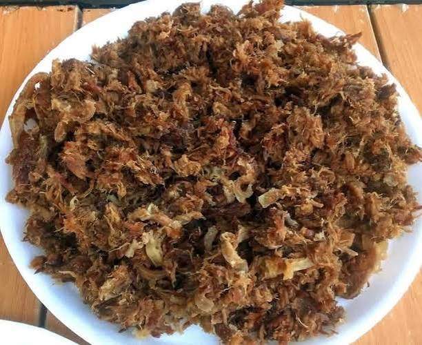
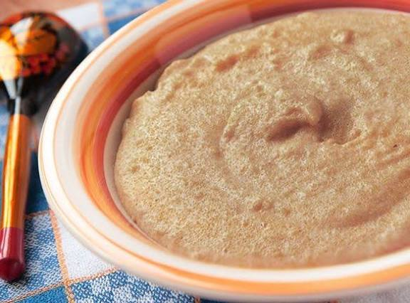

Featured Dishes

Seswaa
Botswana's national dish consisting of slow-cooked pounded beef or goat meat.

Bogobe jwa Lerotse
Sorghum porridge infused with indigenous lerotse melon for a unique flavor.

Dikgobe
A hearty combination of beans and samp or sorghum cooked to perfection.